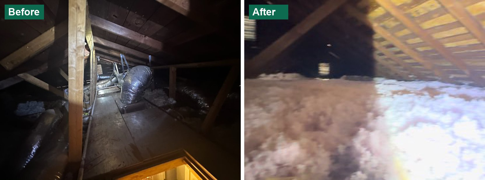

Green Warriors: South Dallas Weatherization Pilot
Seven South Dallas homes weatherized by neighborhood residents trained for the work, with three years of bills and smart-meter data to show what it saved.
- Completed
- 2023–2026
- Weatherization
- Energy burden
- Workforce training
- Smart meters
- City of Dallas

In plain English
Many homes in South Dallas's two lowest-income zip codes, 75210 and 75215, are old, uninsulated and leaky, and the people living in them often spend 40 to 60 percent of their income on housing. Health and safety problems such as mold or rotting wood keep many of these homes out of the federal Weatherization Assistance Program, and their owners cannot get loans for repairs. Green Warriors, sponsored by the City of Dallas, tested whether a small, targeted retrofit could still lower their energy use, and whether residents of the same neighborhood could be trained to do the work.
In 2024 the crew weatherized seven homes for $3,750 each: blown-in attic insulation, caulking around doors and windows, and LED lighting. The lab then compared utility bills from early 2023 with fifteen-minute smart-meter readings through April 2026, set against the weather. Energy use fell 10 percent across the seven homes (7.3 percent without two homes whose occupancy changed), and the best home cut its use 13.4 percent, about $780 a year, paying back its retrofit in under five years. Some homes used more electricity in summer than before: residents who had avoided running their air conditioning could now afford to keep cool. The crew members completed a building-science course built by Energy Smart Academy and hosted by the City, with Green Careers Texas and St. Philip's School and Community Center as community partners.
Main points
- Seven homes in zip codes 75210 and 75215, weatherized in 2024 for $3,750 each ($26,250 in all): attic insulation ($2,850), caulking ($750) and LED lighting ($150).
- Energy use fell 10.0 percent across all seven homes from January–September 2024 to the same months of 2025, and 7.3 percent with two outlier homes set aside; 2025 was about 2 °F cooler in both summer and winter, so the savings are conservative.
- The best home saved 2,658 kWh (13.4 percent), about $780 a year at $0.22/kWh, and pays back its retrofit in under five years.
- Some summer use went up: insulation made air conditioning work, so residents who had been going without it could finally stay cool. That is more comfort for the same money, not wasted energy.
- Neighborhood residents trained as the Green Warriors crew, completing the Weatherization: Building Science Principles course before weatherizing the homes themselves.
- The final impact report was briefed to the City of Dallas Environmental Commission on June 10, 2026, and is part of the City's public record. The commission's vice chair, Tracy Wallace, who designed the pilot, told The Dallas Morning News the commission could recommend including the program in plans for the City's 2027–28 budget year.
Papers, code and materials
- ReportGreen Warriors 2024 Final Impact Report, as briefed to the City of Dallas Environmental Commission on June 10, 2026 (City of Dallas public record)
- RelatedCity of Dallas Environmental Commission, June 10, 2026 meeting: agenda, minutes and attachments
- NewsUTA News (2026): Small fixes, big savings
- NewsWFAA (2026): Weatherization pilot cuts energy use in aging South Dallas homes
- VideoWFAA (2026): How a weatherization pilot cuts energy use in aging South Dallas homes (video)
- NewsThe Dallas Morning News (2026): Could a few changes save hundreds in electricity for South Dallas residents in the summer?
People
- Erick C. Jones Jr., PhD, PEPrincipal Investigator · SEAR Lab directorin
- Toryon EvansGraduate researcher, data collection and reportingin
Profiles marked in link to LinkedIn. More past and present lab members are on the SEAR Lab team page.